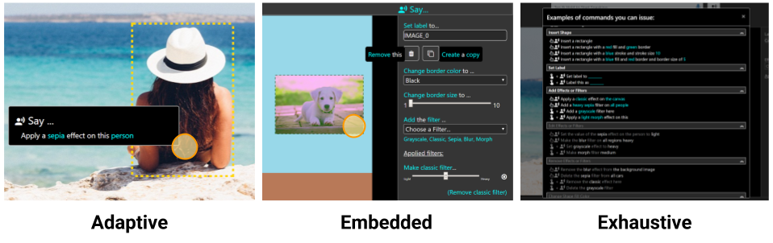

Arjun Srinivasan, Mira Dontcheva, Eytan Adar, and Seth Walker
Discovering what to say and how to say it remains a challenge for users of multimodal interfaces supporting speech input. Users end up "guessing" commands that a system might support, often leading to interpretation errors and frustration. One solution to this problem is to display contextually relevant command examples as users interact with a system. The challenge, however, is deciding when, how, and which examples to recommend. In this work, we describe an approach for generating and ranking natural language command examples in multimodal interfaces. We demonstrate the approach using a prototype touch- and speech-based image editing tool. We experiment with augmentations of the UI to understand when and how to present command examples. Through an online user study, we evaluate these alternatives and find that in-situ command suggestions promote discovery and encourage the use of speech input.